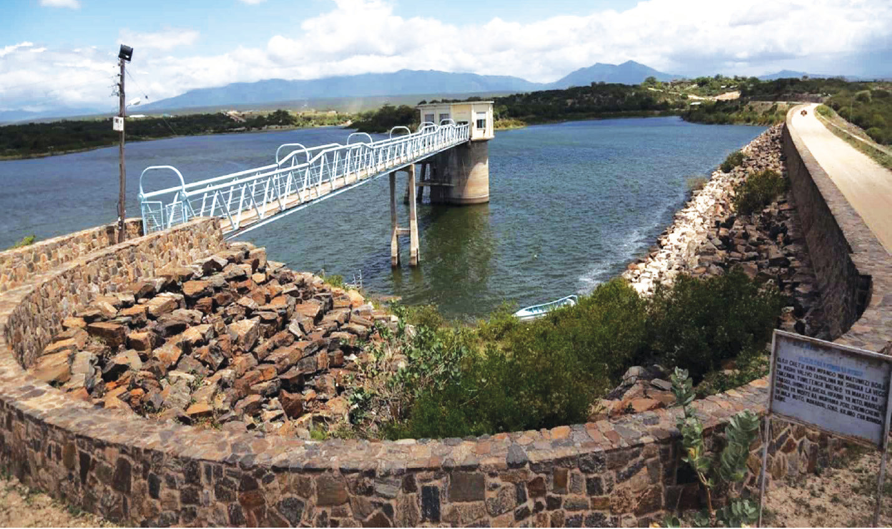

Bwawa la Nyumba ya Mungu
Bwawa la Nyumba ya Mungu lipo katika wilaya ya Mwanga mkoa wa Kilimanjaro. Chanzo cha maji ya Bwawa la Nyumba ya Mungu ni mto Kikuletwa na Mto Lumi. Bwawa la Nyumba ya Mungu lina ukubwa wa Kilometa za mraba 180. Bwawa hili ni mojawapo ya mabwawa makubwa yanayotumika kuzalisha umeme. Pia, hutumika katika kilimo cha umwagiliaji na shughuli za uvuvi hasa katika maeneo ya mikoa ya Kilimanjaro na Tanga. Kielelezo namba 6 kinaonesha sehemu ya Bwawa la Nyumba ya Mungu.

Bwawa la Kidatu
Bwawa la Kidatu lipo katika wilaya ya Kilosa mkoa wa Morogoro. Chanzo cha maji ya Bwawa la Kidatu ni Mto Ruaha Mkuu. Bwawa hili lina ukubwa wa kilometa za mraba 10, na linatoa maji kwa ajili ya uzalishaji wa umeme kupitia kituo cha umeme cha Kidatu. Aidha, bwawa hili linachangia katika udhibiti wa mafuriko na usambazaji wa maji kwa ajili ya kilimo. Kielelezo namba 7 kinaonesha sehemu ya Bwawa la Kidatu.